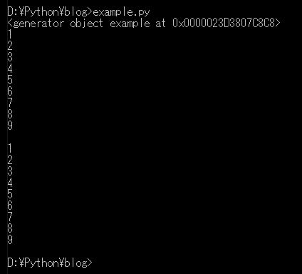
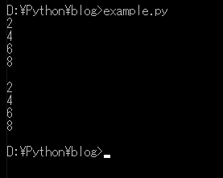
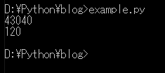
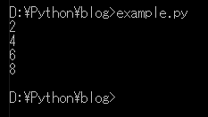
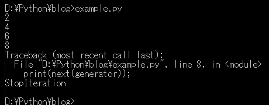

こんにちは。明月です。
この投稿はPythonのジェネレータ(Generator)に関する説明です。
ジェネレータ(Generator)という辞典的な意味は生成するという意味です。Pythonでもジェネレータ(Generator)は生成する意味ではないことではないですが、繰り返し(ループ)文法でイテレータ(iterator)パターンを実装するような機能です。
少し説明が難しくなりますが、関数を呼び出すたびに結果が違うような機能です。
# 関数生成
def example(first, last, step):
# numberの数を正義する。
number = first
# last値まで繰り返す。
while number < last:
# 現在のnumber値を返却する。
yield number
# number値をstep値ほど加算する。
number += step
# example関数を呼び出す。
data = example(1,10,1)
# コンソール出力 - dataはジェネレータタイプ
print(data)
# dataは1から9まで1ずつ増加するジェネレータ
# for를 사용해서 루프를 돌리면 10까지 데이터가 돌아가고 현재의 값이 i가 나온다.
for i in data:
# コンソール出力
print(i)
# 改行
print()
# これはrangeの値を出力した。
for i in range(1,10,1)
# コンソール出力
print(i)

上の例はジェネレータでrange関数と同じ結果が出るように実装しました。range関数も１から9まで出力して1ずつ増加します。
ジェネレータは上の例みたいに関数で使えますが、実はコンプリヘンションでよく使います。
# range関数を利用して1から9までのリストを生成する。
list1 = list(range(1,10))
# list1の値で偶数の値をリストに作成する。
listret = [x for x in list1 if x%2 == 0]
# list1の値で数の値をジェネレータに作成する。
generator = (x for x in list1 if x%2 == 0)
# 偶数リストを出力する。
for i in listret:
# コンソール出力
print(i)
# 改行
print()
# 偶数ジェネレータを出力する。
for i in generator:
# コンソール出力
print(i)

参考 - [Python] 05. コンプリヘンション(Comprehension)を使用する方法
上の例をみれば同じ結果になります。コンプリヘンションを利用してリストを作ることとジェネレータを作ることは差がないです。
そうすればジェネレータは別に意味がなさそうです。
でも、パフォーマンスに大幅差があります。
import sys;
# 確実な差異を確認するため、一万まで登録した。
list1 = list(range(1,10000))
# list1の値で偶数の値をリストに作成する。
listret = [x for x in list1 if x%2 == 0]
# list1の値で数の値をジェネレータに作成する。
generator = (x for x in list1 if x%2 == 0)
# データサイズを出力する。
print(sys.getsizeof(listret));
print(sys.getsizeof(generator));

メモリをみればリストは43,000バイトを使うしジェネレータは120バイトです。
なんでこの差が出るでしょう。
リストの場合はコンプリヘンションで計算した結果をすべて持っていることです。でも、ジェネレータの場合はデータをメモリに持っていることではなく、構造的なオブジェクトでデータを呼び出す時だけ返却するのでこの結果になりました。(構造的なオブジェクトとは値を持っていることではなく、関数のスタックを持っていることです。)
なので、一回性のデータならリストにデータを格納することではなく、ジェネレータを使うほうがパフォーマンスを上げることができます。
ジェネレータはリストによる短所もあります。
# range関数を利用して1から9までのリストを生成する。
list1 = list(range(1,10))
# list1の値で数の値をジェネレータに作成する。
generator = (x for x in list1 if x%2 == 0)
# 生成されたデータを出力する。
for i in generator:
# コンソール出力
print(i)
# 生成されたデータを出力する。
for i in generator:
# コンソール出力
print(i)

再使用ができないことです。なので結果は一回だけ出力されました。
ジェネレータはループだけ使うことではありません。
# range関数を利用して1から9までのリストを生成する。
list1 = list(range(1,10))
# 生成されたデータを出力する。
generator = (x for x in list1 if x%2 == 0)
# next関数を利用すれば一つずつ取得ができる。
# コンソール出力
print(next(generator))
# コンソール出力
print(next(generator))
# コンソール出力
print(next(generator))
# コンソール出力
print(next(generator))
# 値は総4個があるが、5回目に取得すればどんな結果になるだろう?
print(next(generator))

next関数で2,4,6,8のデータを一つずつ出力しました。8の以降はデータがないので、エラーが発生します。
ここまでPythonのジェネレータ(Generator)に関する説明でした。
ご不明なところや間違いところがあればコメントしてください。
- [Python] 15. クラスを継承する方法2020/06/15 18:20:07
- [Python] 14. クラスプロパティ(Property)2020/06/12 17:45:13
- [Python] 13. クラス関数(class method)とダック・タイピング、そして特殊メソッド2020/06/11 19:42:29
- [Python] 12. クラス(Class)を使う方法2020/06/10 19:33:33
- [Python] 11. デコレーター（Decorator）を使う方法2020/06/09 17:27:18
- [Python] 10. モジュールとパッケージ(import)2020/06/08 19:07:50
- [Python] 09. 例外処理する方法2020/06/05 17:11:47
- [Python] 08. ジェネレータ(Generator)2020/06/04 18:46:08
- [Python] 07. globalとnonlocal2020/06/03 20:34:49
- [Python] 06. 関数(function) - インライン関数、callbak、ラムダ(lambda)そしてクロージャ2020/06/02 20:51:22
- [Python] 05. コンプリヘンション(Comprehension)を使用する方法2020/06/01 19:38:58
- [Python] 04. 制御文(if, while, for, break, continue)とインデント2020/05/29 21:09:08
- [Python] 03. Pythonでリスト(list)とタプル(tuple)、そしてディクショナリ(dictionary)、セット(set)2020/05/27 18:49:08
- [Python] 02. データタイプ、変数宣言そしてコメントする方法2020/05/26 18:16:52
- [Python] 01. Python3をインストールする方法(Anacondaインストール)2020/05/25 19:02:44
- [CentOS] Linux環境(CentOS)でCassandra(NoSQL DB)をインストールする方法(DBeaverブラウザでNoSQL使い方)2021/11/12 17:33:58
- [Design pattern] 3-3. コマンドパターン(Command pattern)2021/11/05 17:01:42
- [Window] apache-tomcatでロードバランシング(Load balancing)する方法とセッションクラスタリング（セッション共有）2021/11/05 16:58:45
- [Window] Apacheでmod_jkとmod_proxyの差異、apacheでtomcatのwebsocketのプロキシフォーワードする方法2021/11/05 16:55:05
- [PHP] Apache環境の同じホスト中でPHPとJava(Servlet)を同時に起動、運用する方法2021/11/05 16:52:04
- [C#] 61. ウィンドウフォーム(Window form)でスレッド(Thread)を使い方、クロススレッド問題解決2021/11/04 19:29:51
- [Design pattern] 3-2. 責任の連鎖パターン(Chain of responsibility pattern)2021/11/04 19:27:58
- [Design pattern] 3-1. ストラテジーパターン(Strategy pattern)2021/11/03 18:38:52
- [C#] 60. ウィンドウフォーム(Window form)のイベント設定する方法2021/11/02 21:18:08
- [Design pattern] 2-7. ファサードパターン(Facade pattern)2021/11/02 19:32:31
- [Design pattern] 2-6. プロキシパターン(Proxy pattern)2021/11/01 19:42:44
- [Design pattern] 2-5. フライウェイトパターン(Flyweight pattern)2021/10/29 19:48:27
- [C#] 59. ウィンドウフォーム(Window form)にコントロール(Control)を使い方法2021/10/29 19:45:43
- [Design pattern] 2-4. デコレーターパターン(Decorator pattern)2021/10/28 20:11:13
- [C#] 58. ウィンドウフォーム(Window form)を作成する方法、そしてウィンドウメッセージとキュー2021/10/27 20:35:44